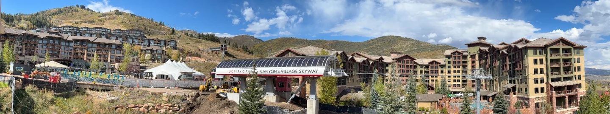
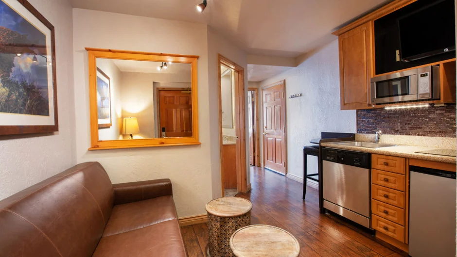

Park City Women's Weekend is the one event on the 2027 calendar that happens in our own village rather than somewhere we have to tell you how to reach. It is listed for 5 to 7 March 2027 at Canyons Village, and it is built around exactly the kind of group that struggles to find lodging: six or eight women who want to ski together, eat together and not be split across three hotel rooms.

What Women's Weekend is
Park City Mountain started Women's Weekend in 2024, around International Women's Day, and it has run every March since. It is a weekend of women-led, women-only ski and snowboard clinics with a social programme built around them: a welcome party, apres sessions, a film screening, brunches, and in some years yoga and sunrise uphill laps before the lifts open.
What makes it unusual among resort events is that it is participatory rather than spectator. The whole weekend is lessons, laps and the evenings around them, which is why it suits a group of friends rather than a family with small children.
When is Women's Weekend 2027?
5 to 7 March 2027, a Friday to Sunday, according to the Canyons Village events calendar.
Treat that as firm enough to plan around and soft enough to check again. When we wrote this, Park City Mountain had not published its own 2027 schedule and its event page still carried an older range. The dates have moved every year: 8 to 10 March in 2024, 7 to 9 March in 2025, 6 to 8 March in 2026. The pattern is the first full weekend of March, drifting a day earlier each year, and 5 to 7 March fits it.
Clinic registration opens separately from the event listing and has sold out unevenly in past years. If the weekend is the reason for the trip, watch the resort's own event page rather than waiting for a roundup. Event listings go stale; the resort's page is the one that gets corrected.
Why it matters that it is in Canyons Village
Park City Mountain has two base areas fifteen minutes apart by road, and they are not interchangeable. Women's Weekend is held at Canyons Village, the northern base, not at the town base below Main Street.
That matters more than it sounds. Clinic check-in happens at the village, and the apres programme has been based around the village bars and the Forum. Coverage of past editions notes the resort recommending that attendees stay on the Canyons Village side so that check-in and the evening events are a walk rather than a drive.
An early clinic check-in is a different proposition depending on which side of the mountain you woke up on. From village lodging it is a short walk in boots; our honest timings are in how close Westgate is to the lifts. From the town base it is a shuttle or a car park first.

What the weekend actually involves
The core is the clinics. Past editions have run them women-led and women-only, split by ability across beginner, intermediate and advanced, for skiers and snowboarders, and open to women aged 18 and over. A mixed-ability group can all take part without anyone stranded on terrain they hate, which is the usual failure mode of a friends' ski trip.
Two practical conditions. Participants bring their own equipment, and a valid Epic Pass or lift ticket is required on top of clinic registration. Which product covers what is set out in Park City lift tickets and the Epic Pass, and it is worth sorting before you travel rather than in a queue on the Friday morning.
Around the clinics, past years have included a welcome party at Red Pine Lodge, mid-mountain at the top of the Red Pine Gondola, a DJ at the Umbrella Bar, a film screening at the Forum, a party lap, brunches and a sound bowl session. Programming changes year to year, so take that as the shape of the weekend rather than a schedule.
What else is on in the village
Independently of Women's Weekend, the village runs its own winter programme, and the first weekend of March 2027 is a busy one.
| Day | What | Time | Where |
|---|---|---|---|
| Fri 5 Mar | Apres at the Airstream | 2–5 pm | The Forum, by the Umbrella Bar |
| Fri 5 Mar | Pub quiz | 6–8 pm | Hyatt Centric |
| Sat 6 Mar | Apres at the Airstream | 12–3 pm | The Forum, by the Umbrella Bar |
| Sat 6 Mar | Spring Concert Series opens | 3–5 pm | Canyons Village Forum Stage |
| Sun 7 Mar | Apres at the Airstream | 2–5 pm | The Forum, by the Umbrella Bar |
The Saturday is the one to note: the Airstream session runs into the opening afternoon of the Spring Concert Series on the Forum Stage, so the village has live music from three until five while everyone is coming off the hill. If you are planning where the group eats afterwards, where to eat in Canyons Village and apres-ski in Canyons Village cover the walkable options.
The villa these guides are written from
We own a Premier Two-Bedroom Villa inside Westgate Park City Resort, in Canyons Village. It is 1,100 square feet, two king bedrooms and two queen sleeper sofas, so it sleeps eight in one unit. Full kitchen, a kitchenette in the lock-off studio, two bathrooms with walk-in showers, and a short walk to the Red Pine Gondola.
Straight answer on dates: our own open weeks this season are Presidents' Week, 13 to 20 February 2027, and spring break, 21 to 28 March 2027, not the Women's Weekend dates. Ask anyway if early March is what you want and we will tell you honestly what we can do.
Why a villa suits this kind of group
A women's weekend group is typically six to eight adults who know each other well and want to be in the same place in the evening. That is the worst group size to put in a hotel and the best one to put in a villa.
Three or four hotel rooms gives you four bathrooms and nowhere to sit together. One villa sleeping eight gives you a kitchen, a dining table and a living room, which is where the weekend actually happens once the lifts stop. We set the two side by side in a two-bedroom villa vs two hotel rooms.
The lock-off design helps with a group of friends rather than a family. The villa is two units that join: two front doors, two living areas, two bathrooms. Four people can turn in early on one side while the other side stays up, without anyone tiptoeing. The layout section on our homepage shows how the two halves fit together, and the gallery is all photographs of the actual rooms.
The kitchen is the other argument: a group of eight eating out three nights in Canyons Village is a real cost, and cooking two of them is what most groups do.

Common questions
When is Park City Women's Weekend 2027?
The Canyons Village events calendar lists it as 5 to 7 March 2027. Park City Mountain had not published its own 2027 schedule when we wrote this, and its event page still showed an older date range, so confirm with the resort before you book flights.
Where is Park City Women's Weekend held?
At Canyons Village, the northern base of Park City Mountain, rather than at the town base. Clinic check-in and most of the social programme have been based in the village, and the resort has recommended staying on that side.
Do you need to be a strong skier to join the clinics?
No. Past editions have run women-led clinics at beginner, intermediate and advanced level, for skiers and snowboarders, so a group of mixed ability can all take part. Clinics have been open to women aged 18 and over.
Do you need a lift ticket or Epic Pass for Women's Weekend?
Yes. The listing states that participants need their own equipment and a valid Epic Pass or lift ticket. The clinic registration is separate from the pass, so budget for both.
How far ahead should a group book for Women's Weekend?
Earlier than feels necessary. Clinic places are limited and have filled unevenly in past years. Lodging that sleeps a whole group in one unit is the scarcest part of the Park City market in any season.
What else is happening in Canyons Village that weekend?
The village calendar puts Apres at the Airstream by the Umbrella Bar on all three days, a pub quiz at the Hyatt Centric on the Friday evening, and the opening afternoon of the Spring Concert Series on the Forum Stage on Saturday 6 March.